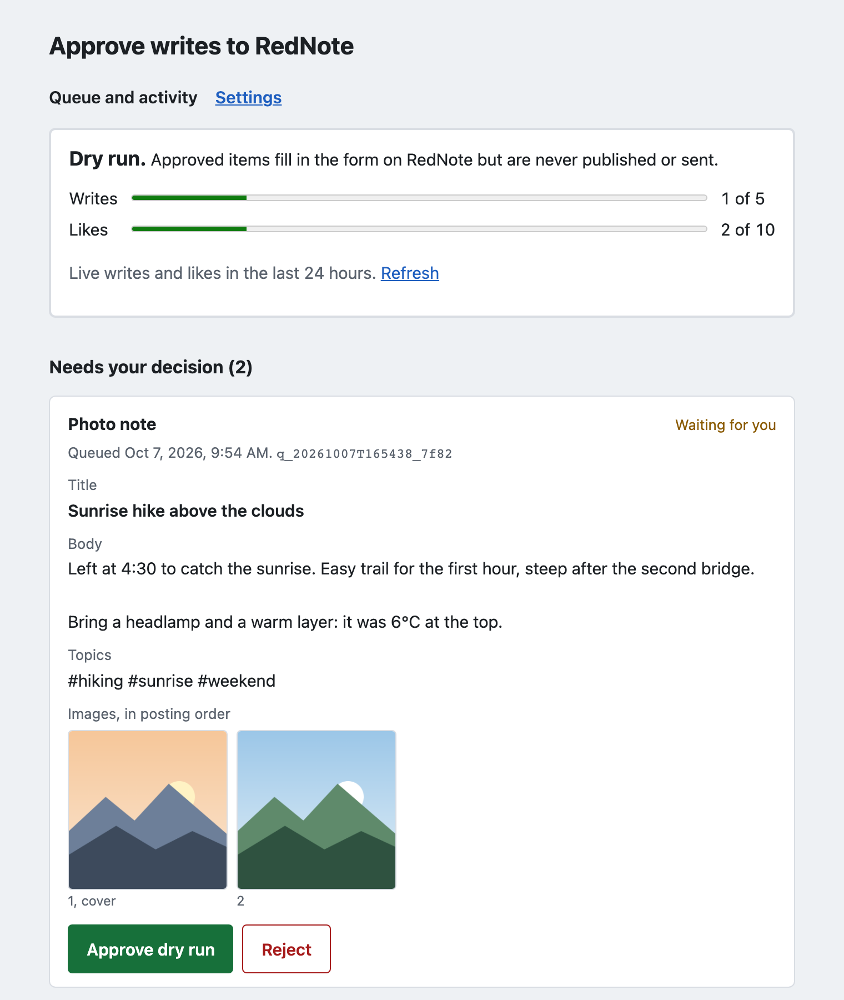
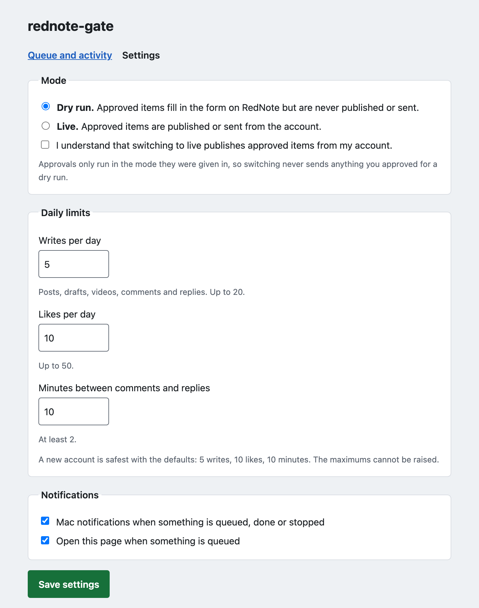

Nothing posts until you click Approve.
rednote-gate lets Claude Code, Claude Desktop or Codex help run one RedNote (Xiaohongshu) account. Claude researches, drafts notes and replies, and queues them. Each post, comment, reply and like waits on a page on your own computer until you approve it.
For one throwaway account only. It drives the RedNote website with a browser, which is against RedNote's terms, and the account can be banned.
$ git clone https://github.com/YashShelar007/rednote-gate.git
$ cd rednote-gate
$ npm run setup
How it works
Every write moves through the same three states. Only your click moves it from the first to the second.
-
pending
Claude drafts
Ask in plain words, or use a slash command. Claude writes the note, comment or reply and adds it to a queue. Nothing opens on RedNote. The approval page opens in your browser.
-
approved
You approve
The page shows the exact title, body and images. Click Approve or Reject. You then have 30 seconds to cancel. Saying “yes, post it” to Claude changes nothing.
-
posted
It posts and shows you
A browser on your computer does the steps on the site. When it ends, the page shows a screenshot of what the browser showed, so you can see what happened.
What it can do
Reads run straight away. Writes only add an item to the queue. Workflows chain them together as slash commands in Claude Code.
Reads
Run at once, no approval needed.
- Search notes by keyword
- Read a note: title, body, tags, likes and more
- Read a note's comments (first page)
- List your own notes, newest first
- Make text-card images on your computer for notes without photos
Writes
Each one waits for your Approve click.
- Photo notes with 1 to 9 images, linked topics and emoji
- Video notes
- Drafts
- Comments on a note
- Replies to a comment
- Likes, with their own daily cap
Workflows
Slash commands in Claude Code.
post_photos: a note from your photos and a one-line briefpost_from_concept: research a concept, write an original note, render text cardsreply_to_comments: draft up to 3 repliesresearch_topic: summarise what works for a topic, read onlyreview_queue: what is waiting and what happened
Safety and guardrails
Of nine RedNote automation projects read on 2026-10-06, none enforced a per-item human approval in code. Four asked the AI to check with you, which an AI can skip. These rules live in code.
Approval in code, not in chat
Write tools can only queue. The worker acts only on items a human approved on the local page.
What you approve is what posts
Images are copied and hashed when queued and checked again before upload. Every field is read back before the final click.
Daily limits from a ledger
5 writes, 10 likes and one comment every 10 minutes by default. They come from an append-only ledger, so a restart does not reset them. The settings page can change them, never past 20 writes, 50 likes or 2 minutes between comments.
Stops on a captcha
A captcha or a “too frequent” warning stops everything until you click Resume. It never solves captchas and never retries.
A screenshot of every attempt
After each attempt the page shows what the browser showed at the end. An attempt that ends in doubt is marked unknown and is never retried.
Dry run first
It starts in dry run: approved items fill in the form but never publish. Going live on the settings page takes a confirmation tick.

Honest limits
Read these before you set it up.
- It is against RedNote's terms. It drives the website with a real browser and a real logged-in session. The README lists the anti-bot measures it uses.
- Use one throwaway account. The account can be rate limited, restricted or banned. Never use a primary or brand account.
- Drafts stay in the browser. RedNote's website keeps drafts in the browser, so a draft saved here does not show up in your phone app.
- Keep browser tools out of the same session. An AI with its own browser tool could open the approval page and click Approve.
- Pages change. When RedNote changes its site, a flow can break until someone updates it.
Install
You need Node 20 or newer, a RedNote account made for this, and the phone that account is logged in on.
- Clone the repo and run setup. It installs Chromium, builds, opens the QR login for your throwaway account, and connects rednote-gate to Claude Code.
$ git clone https://github.com/YashShelar007/rednote-gate.git $ cd rednote-gate $ npm run setup - Ask Claude for something, such as “post these two photos about my hike”. Approve it on the page that opens. It runs as a dry run.
- When a dry run looks right, switch to live and open a new Claude Code session.
$ npm run live
For Claude Desktop or Codex, see the README.